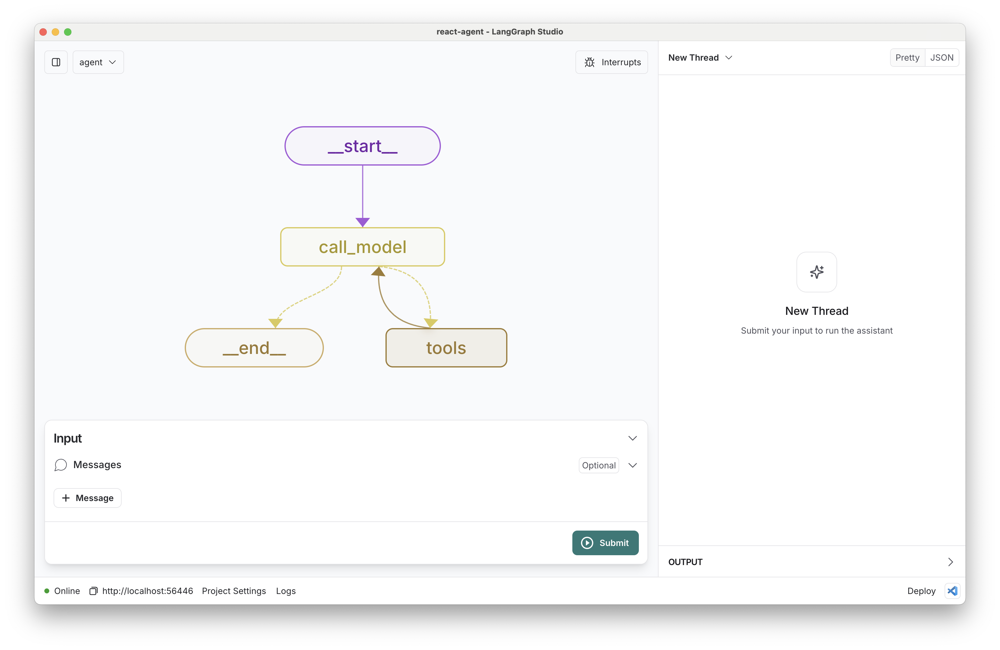
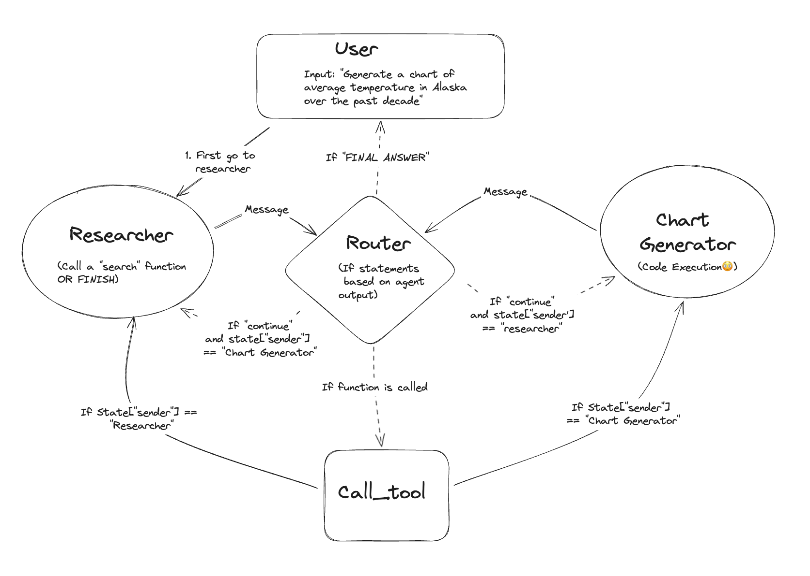
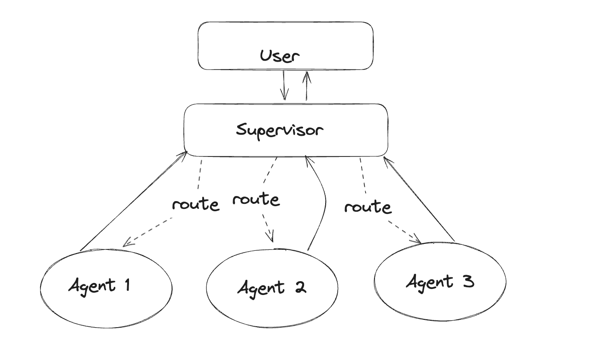
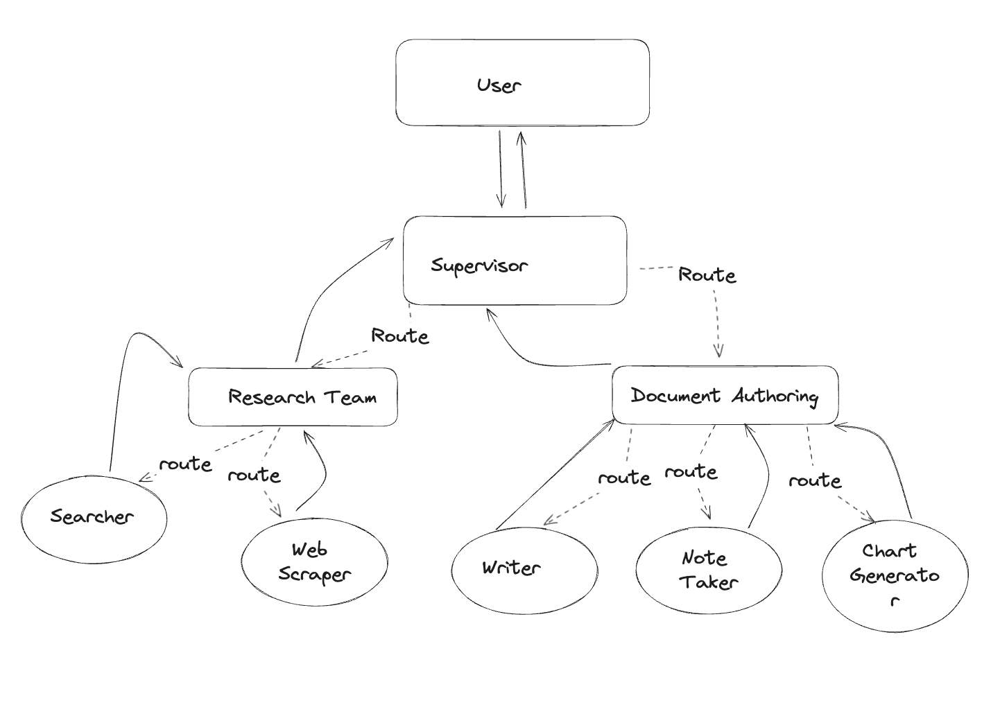

1LLM vs AI Agent
💬 LLM thuần (chatbot)
- 📥 Nhận prompt → 📤 trả 1 câu trả lời
- ❌ Không tự gọi API / truy vấn DB
- ❌ Không nhớ gì giữa các bước
- ❌ Kiến thức "đóng băng" tại thời điểm train
🤖 AI Agent
- 🔁 Lặp: suy luận → hành động → quan sát
- 🔧 Gọi tool: SQL, API, search, code...
- 📦 Nhớ ngữ cảnh & kết quả qua State
- 🎯 Tự quyết định khi nào "đã xong"
Một AI Agent gồm 4 thành phần:
Model
LLM suy luận & quyết định bước tiếp theo: cần gọi tool nào, hay đã đủ để trả lời.
Tools
Hàm để Agent "với tay" ra thế giới thật: truy vấn DB, gọi API, tìm web, tính toán.
Memory
Lưu lịch sử hội thoại + kết quả tool để Agent không "quên" giữa các bước.
Loop
Điều phối: gọi model → chạy tool → đưa kết quả lại model → lặp đến khi đạt mục tiêu.
2 LangGraph là gì?
LangGraph là thư viện Python cho phép xây dựng AI Agent dưới dạng đồ thị có trạng thái (stateful directed graph). Thay vì một chuỗi prompt tuyến tính A → B → C, LangGraph cho phép agent lặp lại, rẽ nhánh, gọi tool nhiều lần và nhớ toàn bộ lịch sử.
Nó xây dựng trên LangChain nhưng giải quyết bài toán khác: điều phối luồng chạy của agent — không chỉ kết nối các bước đơn giản.

Mọi đồ thị LangGraph được lắp từ 3 viên gạch cốt lõi — chính là các thành phần bạn thấy trong sơ đồ trên:
Node/h4>
Một bước xử lý, thường là một hàm Python. Node đọc State, làm việc của nó (gọi LLM, chạy tool…), rồi ghi kết quả trở lại State. Trong hình: AGENT và TOOL là các node.
Edge
Đường nối quyết định node nào chạy tiếp. Edge thường (normal) đi cố định: node A xong → luôn sang node B.
Conditional Edge
Cạnh rẽ nhánh động: một hàm đọc State rồi chọn đích đến (vd: có tool_calls → Tool Node; không → END). Đây là thứ tạo ra phân nhánh & vòng lặp.
State
Bộ nhớ dùng chung mọi node đọc/ghi — thường là một TypedDict chứa messages, kết quả tool… Truyền xuyên suốt graph nên agent "nhớ" được ngữ cảnh giữa các bước.
3Single ReAct Agent
ReAct (Reasoning + Acting) là pattern phổ biến nhất: LLM đọc State, quyết định có cần gọi tool không, nếu có thì gọi rồi xem kết quả, lặp cho đến khi đủ thông tin để trả lời.

4 Kiến trúc Multi-Agent
Khi một agent đơn lẻ không đủ, ta chia bài toán cho nhiều agent chuyên biệt. Theo blog của LangGraph, có 3 kiến trúc multi-agent phổ biến:
Multi-Agent Collaboration
Shared state
Các agent chung một scratchpad / State — mọi bước trung gian của agent này đều hiện ra cho agent kia thấy. Đơn giản, hợp khi cần phối hợp chặt; nhược điểm: context dễ phình to khi nhiều agent.
Agent Supervisor
Router
Một supervisor điều phối, route task tới agent chuyên biệt; mỗi agent có scratchpad riêng, chỉ trả kết quả về supervisor (không thấy việc của nhau).
Hierarchical Agent Teams
Nested graphs
Mỗi "agent" bản thân là một LangGraph khác → lồng nhiều tầng, kiểu "supervisor của các supervisor". Dùng khi quá nhiều agent, một supervisor route không xuể.
5 LangGraph vs LangChain
| Tiêu chí | ⛓️ LangChain | 🔷 LangGraph |
|---|---|---|
| Mô hình luồng | Chuỗi tuyến tính: A → B → C | Đồ thị có hướng, nhánh & vòng lặp |
| Vòng lặp (Cycle) | Không – không hỗ trợ natively | Có – built-in, qua conditional edge |
| State quản lý | Hạn chế – pass-through, không persistent | Mạnh – TypedDict + Reducer + Checkpointing |
| Human-in-the-Loop | Khó – phải tự implement | Dễ – interrupt/resume từ checkpoint |
| Multi-Agent | Cơ bản – AgentExecutor đơn lẻ | Mạnh – Subgraph, Supervisor pattern |
| Độ phức tạp | Thấp – ít boilerplate, dễ học | Trung bình – cần hiểu Graph, State, Reducer |
| Use case chính | RAG, QA, Summarization, pipeline cố định | Agent phức tạp, multi-step, long-running |
| Quan hệ | Độc lập | Xây trên LangChain – dùng chung tools, LLMs, prompts |
⛓️ Dùng LangChain khi:
- ✅ Pipeline đơn giản, output dự đoán được
- ✅ RAG, Document QA, Summarization
- ✅ Prototype nhanh, ít boilerplate
- ✅ Team mới bắt đầu với LLM
🔷 Dùng LangGraph khi:
- ✅ Agent cần loop, retry, tự sửa lỗi
- ✅ Nhiều agent phối hợp (supervisor)
- ✅ Cần human review giữa chừng
- ✅ Long-running, crash recovery